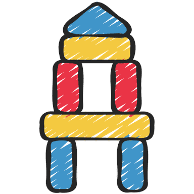

Personvernerklæring
Sist oppdatert: 3. august 2026
Denne personvernerklæringa gjeld for nettstaden Vyrdepil og alle spel og verktøy som ligg her. Kort sagt: tenestene er laga slik at persondata aldri blir samla inn på ein server. Alt køyrer i nettlesaren din, og den avgrensa informasjonen nokre spel lagrar, blir verande lokalt på eininga di.
Behandlingsansvarleg og kontakt
Vyrdepil er eit hobbyprosjekt laga og drifta av Kjellove Bjørge. Har du spørsmål om personvern, kan du ta kontakt på:
E-post: [klikk for å vise e-postadressa]
E-postadressa er skjult i sidekoden for å unngå at robotar hentar henne automatisk. Klikk lenkja for å sjå og bruke henne.
Kva vi samlar inn — og ikkje
Vyrdepil samlar ikkje inn personopplysningar på nokon server. Vi brukar ikkje informasjonskapslar (cookies), analyseverktøy eller sporing. Det er viktig å skilje mellom cookies og localStorage:
| Cookies | localStorage | |
|---|---|---|
| Blir sendt til server? | Ja — cookies blir automatisk sende med kvar førespurnad til serveren | Nei — localStorage-data forlèt aldri nettlesaren din |
| Kan brukast til sporing? | Ja — den vanlegaste metoden for sporing og reklame på nett | Nei — dataen er berre tilgjengeleg for nettsida på di eining |
| Brukast på denne sida? | ❌ Nei, vi brukar ingen cookies | ✅ Ja, berre for å hugse t.d. toppscore og samlingar lokalt |
localStorage-data ligg berre på di eining, og ingen andre kan sjå den. Du kan slette den når som helst (sjå «Lagringstid og sletting»).
Rettsleg grunnlag og formål
Sidan vi ikkje samlar inn eller behandlar personopplysningar på server, er det inga behandling som krev samtykke eller anna rettsleg grunnlag etter personvernforordninga (GDPR) frå vår side.
- Lokal lagring skjer berre for at du skal kunne ta vare på eiga framgang, eigne lister og innstillingar mellom økter. Dataen blir verande på eininga di.
- Formålet med tenestene er læring og undervisning i grunnskulen.
Eksterne tenester
Dei fleste spel og verktøy fungerer heilt utan internett etter at sida er lasta. Nokre få funksjonar hentar likevel innhald frå eksterne tenester. Når nettlesaren din hentar noko frå ein ekstern server, ser den serveren teknisk sett IP-adressa di (som ved all bruk av nett). Ingen personleg informasjon utover dette blir delt.
| Teneste | Brukt av | Kva som skjer |
|---|---|---|
| Wikimedia Commons (upload.wikimedia.org) | Heimsank, Vidfaren | Hentar kort-, hovudstads- og flaggbilete. Wikimedia ser IP-adressa i loggane sine. Ingen speldata blir sendt. |
| Vår eigen signalserver (Azure, Norway East) | Frødekapp (live-quiz) | Koplar nettlesarane saman i ~2 sekund. Ser berre IP — aldri quiz-innhald, namn eller svar. Sjølve spelet går direkte (P2P) mellom nettlesarane. Serveren er vår eigen, så i normal drift går ingenting til tredjepart. Svarar han ikkje, prøver appen den offentlege PeerJS-skya (1.peerjs.com) som naudløysing. |
| Cloudflare cdnjs (cdnjs.cloudflare.com) | Handsam bilete | Lastar JSZip-biblioteket for ZIP-nedlasting. Ingen bilete eller data blir sendt. |
Geografidataen i Vidfaren (hovudstader, fjell, innsjøar, kart) er bygd på førehand og ligg lokalt — det blir ikkje gjort oppslag mot Wikidata medan du spelar. Berre sjølve hovudstadsbileta blir henta frå Wikimedia.
Hosting og serverloggar
Nettstaden blir levert frå Microsoft Azure i regionen Norway East — det vil seie at sidene blir hosta på tenarar i Noreg (innanfor EØS). Som for all bruk av nett mottek vevtenaren teknisk nødvendig informasjon for å levere sidene — typisk IP-adresse, tidspunkt, kva side som blir henta og nettlesartype. Dette er standard for alle nettstader og blir ikkje brukt av oss til å identifisere eller spore deg. Vi koplar ikkje slike tekniske loggar til noko du gjer i spela.
Born og personvern
Tenestene er laga for grunnskulen og er trygge å bruke med elevar:
- Ingen elevdata blir lagra på server eller delt med tredjepart.
- Tekst ein lærar skriv inn (t.d. elevnamn i Klassekart, Flokkdeilar eller Dagsvegen) blir lagra berre lokalt i nettlesaren på den maskina — aldri sendt nokon stad.
- Inga innlogging eller registrering er nødvendig.
Lokal lagring i kvart spel og verktøy
Nokre spel bruker nettlesaren sin localStorage (under nøkkelen VyrdepilStorage) for å hugse framgang. Under finn du nøyaktig kva kvart einskild spel lagrar, og om det treng ekstern tilgang.
Vis detaljar per spel og verktøy
 Duldord
Duldord
| Kva | Kvifor |
|---|---|
| Gjetta ord og utfall per dag (dagnummer, orda du gjetta, og om dagen blei løyst) | For at du skal kunne halde fram på eit påbyrja ord, sjå att tidlegare dagar i arkivet, og for at rekkja og statistikken skal kunne reknast ut |
🌐 Ekstern tilgang: Ingen. Både fasitorda og ordlista som avgjer kva som er gyldige gjett ligg lokalt, så spelet fungerer heilt offline etter at sida er lasta.
 Kludre Klodrian
Kludre Klodrian
| Kva | Kvifor |
|---|---|
| Toppscore (eitt tal) | For å vise personleg rekord mellom speløkter |
🌐 Ekstern tilgang: Ingen. Spelet fungerer heilt offline etter at sida er lasta.
 Ordsmia
Ordsmia
| Kva | Kvifor |
|---|---|
| Toppscore (eitt tal) | For å vise personleg rekord mellom speløkter |
| Historikk over beste ord (inntil 20 ord) | For å vise tidlegare gode ord du har funne |
🌐 Ekstern tilgang: Ingen. Ordsmia brukar ei lokal ordliste og køyrer heilt i nettlesaren. Lista byggjer på Norsk Ordbank frå Språkbanken ved Nasjonalbiblioteket (CC BY 4.0), og ligg i sin heilskap på denne sida — ingen oppslag går ut på nettet.
 Talsmia
Talsmia
| Kva | Kvifor |
|---|---|
| Toppscore (eitt tal) | For å vise personleg rekord mellom speløkter |
| Historikk over beste rundar (inntil 20) | For å vise tidlegare uttrykk, avvik frå mål og poeng |
🌐 Ekstern tilgang: Ingen. Talsmia køyrer heilt i nettlesaren.
 Heimsank
Heimsank
| Kva | Kvifor |
|---|---|
| Kortsamling per kategori (kort-ID, vanskegrad, rekneart, tidspunkt) | For å ta vare på samlinga di mellom speløkter |
| Framgang (poeng, opne kategoriar, merke) | For å hugse kor langt du har kome og kva du har låst opp |
🌐 Ekstern tilgang: Kortbilete blir lasta frå Wikimedia Commons kvar gong du spelar. Wikimedia sine tenarar kan sjå IP-adressa di. Ingen personleg informasjon utover IP-adresse blir delt.
 Vidfaren
Vidfaren
| Kva | Kvifor |
|---|---|
| Beste runde-skår (eitt tal) | For å vise personleg rekord |
| Framgang: samla poeng, oppnådde merke og statistikk | For å halde på framgang og merke mellom økter |
🌐 Ekstern tilgang: Bilete av hovudstader og flagg blir lasta frå Wikimedia Commons medan du spelar hovudstad- og flagg-modus (IP-adressa er synleg for Wikimedia). Sjølve geografidataen ligg lokalt.
 BåreTevling
BåreTevling
| Kva | Kvifor |
|---|---|
| Aktivt spel (koordinatar og skip) | For at du skal kunne ta pause og halde fram der du slapp |
🌐 Ekstern tilgang: Ingen. Spelet fungerer heilt offline etter at sida er lasta.
 Reknedæsj
Reknedæsj
| Kva | Kvifor |
|---|---|
| Toppscore (eitt tal) | For å vise personleg rekord mellom speløkter |
🌐 Ekstern tilgang: Ingen. Spelet fungerer heilt offline.
 Rettslause Raud
Rettslause Raud
Ingen data blir lagra. Spelet brukar ikkje localStorage eller nokon annan form for lagring.
🌐 Ekstern tilgang: Ingen. Spelet fungerer heilt offline.
 Frødekapp
Frødekapp
| Kva | Kvifor |
|---|---|
| Lokalt quiz-bibliotek (quiz-ar du lagar) | For å ta vare på eigne quiz-ar mellom økter |
| Quiz-editor-utkast | For å lagre utkast du jobbar med |
| Sist brukte kallenamn | For å sleppe å skrive namn kvar gong (valfritt) |
🌐 Ekstern tilgang: Live-quiz brukar WebRTC for direkte kommunikasjon mellom nettlesarar. For at maskinene skal finne kvarandre, går det først ei kort melding via ein signalserver vi driftar sjølve (Azure, Norway East). Han ser berre IP-adresser i ~2 sekund under tilkopling — aldri quiz-innhald, namn eller svar. All quiz-data går direkte mellom nettlesarane (P2P). Svarar vår eigen server ikkje, fell appen tilbake på den offentlege PeerJS-skya.
 Frødebrett
Frødebrett
| Kva | Kvifor |
|---|---|
| Quiz-ar (kategoriar, spørsmål, svar, finalerunde) | For å lagre og hente frøder du lagar |
| Lag (siste lagnamn) | For å hugse lagoppsettet mellom speløkter |
🌐 Ekstern tilgang: Ingen. Alt lagrast lokalt. Du kan eksportere/importere frøder som JSON-fil.
 Frødesams
Frødesams
| Kva | Kvifor |
|---|---|
| Frødesamsar (spørsmål og svar med poeng) | For å lagre og hente frødesamsar du lagar |
| Lag (siste lagnamn) | For å hugse lagoppsettet mellom speløkter |
🌐 Ekstern tilgang: Ingen. Alt lagrast lokalt. Du kan eksportere/importere som JSON-fil.
Etikktesten
Ingen data blir lagra. Svarene dine blir berre viste i nettlesaren under testen og forsvinn når du lukkar sida.
🌐 Ekstern tilgang: Ingen. Testen fungerer heilt offline.
 Heite Stavrim
Heite Stavrim
| Kva | Kvifor |
|---|---|
| Team-konfigurasjonar, eigne kategorilister, siste oppsett | For å lagre preferansar mellom speløkter |
🌐 Ekstern tilgang: Ingen. Spelet køyrer heilt lokalt.
 Ordaklok
Ordaklok
| Kva | Kvifor |
|---|---|
| Eigne omgrepslister (titlar, ord-par, alternative svar) | For å hugse listene dine mellom økter |
| Toppscore per liste og modus | For personleg rekord og motivasjon |
| Leitner-progresjon (kva ord du meistrar) | For å prioritere ord du strevar med |
🌐 Ekstern tilgang: Ingen. Køyrer heilt offline. Lister kan delast via URL — då er heile lista pakka inn i sjølve lenkja, ingen tenar er involvert.
 Eikekveik
Eikekveik
| Kva | Kvifor |
|---|---|
| Auto-lagra siste kart og namngjevne lagra kart (nodar, plassering, farge, koplingar) | For å ta vare på arbeidet ditt mellom økter |
🌐 Ekstern tilgang: Ingen. Verktøyet køyrer heilt lokalt.
 Tidvis
Tidvis
| Kva | Kvifor |
|---|---|
| Toppscore (eitt tal) | For å vise personleg rekord |
| Framgang: nivå/XP, merke og statistikk | For å halde på framgang mellom økter |
| Lagra oppsett (modus, retning, vanskegrad, tal oppgåver) | For å hugse det du valde sist |
| Oppsett for arbeidsark (oppgåvetypar, mengd, storleik, tittel, instruksjonar, fasitval og seed) | For å hugse korleis du sette opp arbeidsarket sist |
🌐 Ekstern tilgang: Ingen. Spelet køyrer heilt offline. Elevnamn du hentar til eit arbeidsark blir ikkje lagra — dei er ein eingongskopi frå Flokkdeilar, Klassekart eller innliming, og forsvinn når du lukkar eksportvindauget.
 BiletFlett
BiletFlett
Ingen data blir lagra. Bilete du lastar opp blir berre lese inn i minnet med FileReader API. Når du lukkar sida, er alt borte.
🌐 Ekstern tilgang: Ingen. Verktøyet fungerer heilt offline.
 Klassekart
Klassekart
| Kva | Kvifor |
|---|---|
| Lagra klasseoppsett (elevnamn, plassering, møblar) | For å lagre og hente namngjeve klasseoppsett |
| Flikar / aktive oppsett | For å gjenopprette opne flikar ved neste besøk |
🌐 Ekstern tilgang: Ingen. Elevnamn lagrast kun lokalt — aldri på nokon server. Du kan eksportere/importere oppsett som JSON-fil.
 Flokkdeilar
Flokkdeilar
| Kva | Kvifor |
|---|---|
| Klasselister med elevnamn | For å gjenbruke same liste på tvers av økter |
| Valfrie relasjonar mellom elevar (berre med «Utvida administrasjon») | For at trekninga skal ta omsyn til konfliktar eller preferansar |
| Hash av PIN-kode (om utvida admin er på) — aldri klartekst-PIN | For å beskytte redigeringa mot uvedkomande |
🌐 Ekstern tilgang: Ingen. Elevnamn og relasjonar lagrast berre lokalt og forlèt aldri eininga di.
 Handsam bilete
Handsam bilete
Ingen data blir lagra. Bilete blir lese inn i minnet og behandla med Canvas API. Når du lukkar sida, er alt borte. Reinskoring (tidlegare det eigne verktøyet «Reinskore bilete») og SVG-eksport skjer også heilt lokalt.
🌐 Ekstern tilgang: Ingen. ZIP-biblioteket ligg lokalt i verktøyet, så alt — også ZIP- og SVG-nedlasting — fungerer offline.
Ordskodde
| Kva | Kvifor |
|---|---|
| Lagra ordskyer: innlimt tekst, ordval og innstillingar | For å opne og redigere skyene seinare utan å lime inn teksten på nytt |
🌐 Ekstern tilgang: Ingen. Teksten du limer inn forlèt aldri nettlesaren.
 Dagsvegen
Dagsvegen
| Kva | Kvifor |
|---|---|
| Dagsplanar og vekemalar (fag, tider, aktivitetar, notat) | For å hente fram planane att utan å byggje dei på nytt |
| Fagliste med emoji og hjernepause-aktivitetar | For å hugse tilpassingane læraren har gjort |
| Innstillingar, tekstboksar og dagens arbeidskopi | For at skjermen skal sjå lik ut etter omstart |
🌐 Ekstern tilgang: Ingen. Tekst læraren skriv (t.d. elevnamn ved bursdag) lagrast lokalt på maskina — aldri sendt nokon stad. Teikningar blir aldri lagra.
Livslina (under utvikling)
| Kva | Kvifor |
|---|---|
| Aktiv gjennomspeling (figur, val, økonomi, framgang) | For at du skal kunne halde fram der du slapp seinare |
| Fullførte gjennomspelingar (kortfatta sluttresultat og merke) | For å samanlikne ulike vegval og vise merke på tvers av løp |
🌐 Ekstern tilgang: Ingen. Alle tal (SIFO, Lånekassen, Skatteetaten) ligg lagra lokalt i spelet. Eksport/import av lagringsfila skjer manuelt og lokalt.
Ordkryss
| Kva | Kvifor |
|---|---|
| Lagra kryssord: ord, forklaringar, tittel og oppsettet i rutenettet | For å opne og endre kryssordet seinare utan å skrive inn orda på nytt |
| Elevnamn du har henta til utskrift (kopi frå Flokkdeilar, Klassekart eller innliming) | For å skrive ut eitt ferdig namngjeve ark per elev |
🌐 Ekstern tilgang: Ingen. Ord, forklaringar og elevnamn forlèt aldri nettlesaren. Namna er ein eingongskopi og blir ikkje synkroniserte med Flokkdeilar eller Klassekart.
Leitekryss
| Kva | Kvifor |
|---|---|
| Lagra leitekryss: orda, tittelen, vala for arket og sjølve bokstavrutenettet | For å opne og skrive ut leitekrysset seinare utan å lage det på nytt |
| Elevnamn du har henta til utskrift (kopi frå Flokkdeilar, Klassekart eller innliming) | For å skrive ut eitt ferdig namngjeve ark per elev |
🌐 Ekstern tilgang: Ingen. Ord, rutenett og elevnamn forlèt aldri nettlesaren. Namna er ein eingongskopi og blir ikkje synkroniserte med Flokkdeilar eller Klassekart.
Lydskurd
| Kva | Kvifor |
|---|---|
| Ingenting blir lagra. Lydskurd skriv verken til localStorage eller til noka anna lagring i nettlesaren. | Lydfiler er for store til å lagrast, og vi vil ikkje halde på lyden din lenger enn du sjølv arbeider med henne |
Prosjektfila (.lydskurd) du eventuelt lagrar — klipp, spor, innstillingar og valfritt lyden sjølv | For at du skal kunne halde fram med redigeringa seinare. Fila blir lasta ned til di eiga maskin, ikkje lagra hos oss eller i nettlesaren |
🌐 Ekstern tilgang: Ingen. Lydfilene du hentar inn blir dekoda og haldne i minnet i nettlesaren så lenge fana er open, og blir aldri lasta opp nokon stad. Lukkar du eller lastar sida på nytt, er alt borte. Når du lagrar miksen som WAV eller MP3, blir fila laga i nettlesaren din og lasta rett ned til maskina di.
🎤 Mikrofon: Lydskurd kan ta opp frå mikrofon. Nettlesaren spør om løyve først, og mikrofonen blir slått på først når du sjølv trykkjer «Slå på mikrofonen» — og av att med ein gong du lukkar opptaksvindauget. Opptaket går rett inn i minnet på maskina di og blir eit klipp på tidslinja; det blir aldri sendt nokon stad. Dette er det einaste verktøyet på Vyrdepil som ber om mikrofontilgang, og nettstaden har ikkje tilgang til kamera, posisjon eller andre einingar.
📦 Tredjepartskode: MP3-lagringa brukar lamejs (LGPL-3.0), bygd på LAME. Biblioteket ligg sjølv-hosta hos oss i _libs/ og blir lasta frå vår eigen tenar — det gjer ingen kall ut på nettet, og lyden din blir enkoda lokalt i nettlesaren. Sjå _libs/CREDITS.md for versjon og sjekksum.
 Rissverk
Rissverk
| Kva | Kvifor |
|---|---|
| Teikninga du arbeider med — formene, laga, fargane og storleiken på teikneflata | For at du skal finne att arbeidet ditt om du lukkar fana eller lastar sida på nytt ved eit uhell |
| Om du står i enkel eller avansert modus | For at verktøyraden skal sjå lik ut neste gong du opnar Rissverk |
| Om du har slått på namn på punkt og handtak | For at innstillinga skal stå slik du sette henne neste gong |
| Referansebilete du har henta inn — lagra som ein del av teikninga | For at kalkerarket ditt skal liggje der framleis når du kjem tilbake. Biletet blir aldri lasta opp, og det blir aldri med i SVG-en eller PNG-en du lagrar |
Prosjektfila (.rissverk) du eventuelt lagrar — heile teikninga med lagnamn og innstillingar | For at du skal kunne halde fram med teikninga seinare. Fila blir lasta ned til di eiga maskin, ikkje lagra hos oss |
🌐 Ekstern tilgang: Ingen. Teikninga blir lagra lokalt i nettlesaren din og forlèt aldri maskina. Når du lagrar som SVG eller PNG, blir fila laga i nettlesaren og lasta rett ned til deg.
📄 Filer du hentar inn: SVG-filer blir lesne trygt — vi les berre former og fargar, og køyrer aldri innhaldet. Skript, hendingshandterarar og lenkjer ut på nettet blir aldri sett på i det heile. Bilete du dreg inn som kalkerark blir liggjande lokalt i teikninga di og blir skalerte ned for å spare plass.
💾 Plass: Nettlesaren har berre nokre få megabyte til rådvelde. Blir teikninga for stor, sluttar Rissverk å lagre ho automatisk og seier frå — då må du lagre henne som prosjektfil sjølv.

Bolkestokk| Kva | Kvifor |
|---|---|
| Blokkprogrammet du arbeider med no | For at du skal finne att det du bygde om du lukkar fana eller lastar sida på nytt ved eit uhell |
| Program du sjølv har gitt namn og teke vare på, med tidspunkt | For at du skal kunne hente fram att eit program du laga tidlegare. Det er berre du som ser dei — verken lærar eller vi har tilgang |
| Kva leksjonar du har vore gjennom, kor mange forsøk du har gjort, og datoen | For at du skal finne att staden din i modulen. Dette er ikkje ei vurdering. Framgangen ligg berre på di eiga maskin, følgjer deg ikkje mellom einingar, og kan ikkje hentast inn av læraren |
🌐 Ekstern tilgang: Ingen. Blokkene dine blir aldri sende nokon stad. Heile verktøyet — både blokkeditoren, tolken som køyrer programmet og motoren som rettar oppgåvene — køyrer lokalt i nettlesaren din.
🧩 Korleis programmet blir køyrt: Bolkestokk tolkar blokkene direkte. Det finst inga eval, og ingen programmeringsmotor blir lasta ned. Python-fana viser berre programmet ditt skrive ut som tekst — ho køyrer ingenting.
📦 Tredjepartskode: Ingen. Verktøyet er skrive frå grunnen av i vanleg JavaScript, og brukar korkje Blockly, Scratch eller noko anna eksternt bibliotek.
 Ormritaren
Ormritaren
| Kva | Kvifor |
|---|---|
| Python-programma du lagrar, med filnamn og tidspunkt | For at du skal finne att koden din neste gong du opnar Ormritaren. Det er berre du som ser dei — verken lærar eller vi har tilgang |
| Kva fil som var open sist, og kor stor skrift du har valt i editoren | For at du skal kunne halde fram der du slutta, utan å stille inn på nytt |
| Kva leksjonar du har vore gjennom i opplæringsdelen, kor mange forsøk du har gjort, og datoen | For at du skal finne att staden din i kurset. Dette er ikkje ei vurdering. Framgangen ligg berre på di eiga maskin, følgjer deg ikkje mellom einingar, og kan ikkje hentast inn av læraren |
| Ein kladd av oppgåver ein lærar held på å redigere | Berre for lærarar, i eit eige redigeringsverktøy som ikkje er lenka til frå opplegget. Kladden ligg i læraren sin eigen nettlesar så arbeidet ikkje går tapt ved eit uhell, og blir ikkje send nokon stad |
🌐 Ekstern tilgang: Ingen. Koden du skriv blir aldri send nokon stad — han blir korkje kompilert, køyrd eller lagra på nokon tenar. Heile Python-motoren blir lasta ned til nettlesaren din første gongen du opnar verktøyet, og etter det køyrer alt lokalt på maskina di.
🐍 Kva Python får lov til: Python køyrer inne i nettlesaren sin sandkasse (WebAssembly) og har ikkje tilgang til filene på maskina di. Filsystemet Python ser er oppdikta og ligg berre i minnet — det blir tømt kvar gong du lastar sida på nytt. Vi koplar det med vilje ikkje til varig lagring. Skal du ta vare på eit program, må du lagre det eller laste det ned sjølv.
📦 Tredjepartskode: Python-motoren er Pyodide (MPL-2.0), som er CPython kompilert til WebAssembly, og editoren er CodeMirror (MIT). Begge ligg sjølv-hosta hos oss i _libs/ og blir lasta frå vår eigen tenar — ingen av dei kontaktar noka tredjepart. Sjå _libs/CREDITS.md for versjonar og sjekksummar.
📚 Bibliotek: Skriv eleven import numpy eller import matplotlib, blir biblioteket henta automatisk — men frå vår eigen tenar, aldri frå pakkearkivet PyPI. Vi har valt ut kva som er tilgjengeleg på førehand og lagt filene hjå oss. Det tyder at ingen tredjepart får sjå IP-adressa til eleven, at verktøyet verkar utan internett etter fyrste opning, og at ingen kan dra inn ein vilkårleg pakke frå nettet inn i skulenettlesaren. Skal eit nytt bibliotek inn, må vi leggje det til sjølve.
Vis dine lagra data (VyrdepilStorage)
Her ser du alt som er lagra lokalt i nettlesaren din under VyrdepilStorage. Dataen ligg berre på di eining og blir aldri sendt nokon stad.
(opnar når du klikkar på accordion)
Bruk av kunstig intelligens (KI)
Kva dette tyder
Delar av koden på Vyrdepil er skrivne med hjelp frå KI-verktøy. Men ingenting blir publisert ukontrollert: all kode er lesen, kontrollert og handsama av eit menneske før han kjem ut på nettstaden. Fagleg innhald, ordlister, oppgåver og vurderingar er gjennomgåtte manuelt, og det er eit menneske — ikkje ein modell — som står ansvarleg for det du finn her.
Like viktig er det som ikkje skjer: det er ingen KI i sjølve nettstaden. Spela og verktøya inneheld ingen KI-modellar og gjer ingen kall til KI-tenester. Ingenting du skriv, teiknar, lastar opp eller seier inn i mikrofonen blir sendt til ein KI — verken for å svare deg eller for å trene opp ein modell. KI-en er berre eit verktøy i utviklinga; når sida er laga, er han ute av biletet.
Lagringstid og sletting
Lokalt lagra data ligg i nettlesaren din heilt til du slettar den sjølv. Du har full kontroll:
- Bruk «Slett alt» i datavisaren over for å fjerne all Vyrdepil-data med éin gong.
- Eller slett nettlesardata/«nettstadsdata» via innstillingane i nettlesaren din.
- Mange spel og verktøy har òg eigne knappar for å slette eller tilbakestille eigne data.
Dine rettar
Personvernforordninga (GDPR) gjev deg rettar som innsyn, retting, sletting og dataportabilitet. Sidan vi ikkje lagrar personopplysningar om deg på server, har vi ingenting å hente fram eller slette på dine vegner — all lokal data ligg på eininga di og er fullt ut under din kontroll. Har du likevel spørsmål om personvern, er du velkomen til å kontakte oss (sjå over).
Endringar i erklæringa
Erklæringa kan bli oppdatert om tenestene endrar seg. Datoen for siste oppdatering står øvst på sida. Vesentlege endringar vil bli synlege her.